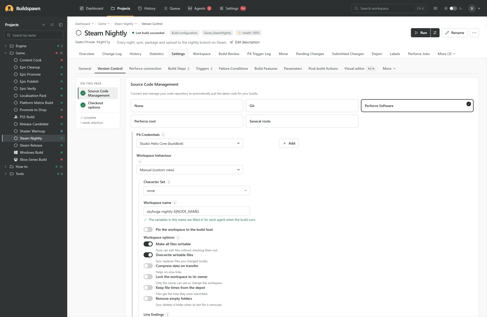
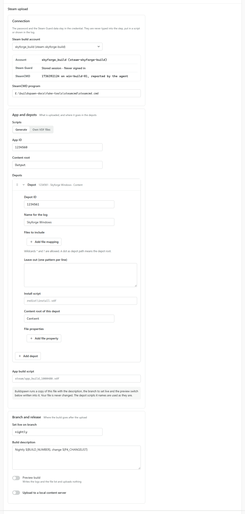
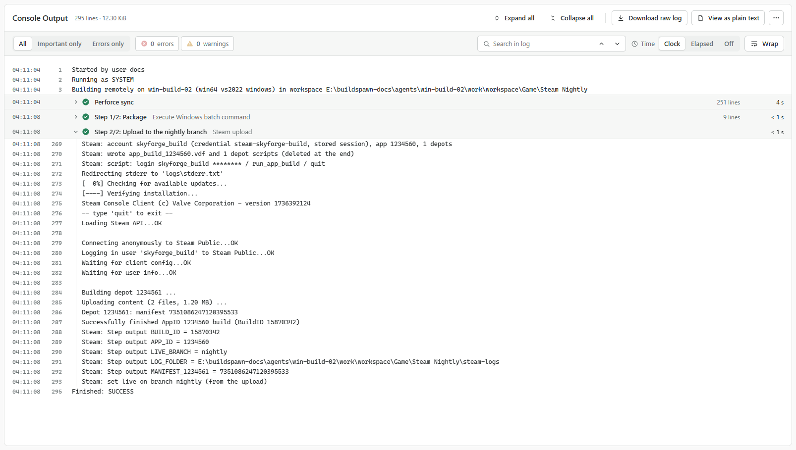

Build Unity from Perforce and upload to a Steam branch
Sync your game from Perforce, build a Windows player with Unity, and upload it to a Steam beta branch, all in one build configuration.
Before you start
- A Perforce connection (server, build user and password or ticket) and the depot path of your game, for example
//depot/skyforge/.... See Perforce. - A Windows agent with the Unity Editor and a build script in the project, for example
BuildScript.BuildWindows, that writes the player toBuilds/Win64. See Unity. - A Steam build account credential you have signed in with. See Steam build account.
- Your Steam App ID, the Depot ID, and a beta branch that already exists in Steamworks, for example
nightly.
Steps
Connect Perforce
- Open your project, click New Item, name it
Steam Nightly, choose Freestyle project and click OK. - Go to Settings › Version Control and choose Perforce Software.
- Pick the P4 Credentials, set Workspace behaviour to Manual (custom view), and type the Workspace name
skyforge-steam-${NODE_NAME}. - In View Mappings type
//depot/skyforge/... //skyforge-steam-${NODE_NAME}/.... - Choose Auto cleanup and sync and click Save.

Build the player with Unity
- Open Build steps › Add build step › Unity.
- Set Step name to
Build Windows player, fill in the project path and the execute methodBuildScript.BuildWindows. Every Unity field is on the Unity page. - Click Save.
Install SteamCMD
- Add the step Install SteamCMD and keep its defaults. See Install SteamCMD. Skip this if your agent already has SteamCMD.
- Place it before the Unity step or right after it. It only has to come before the upload.
Upload to the Steam branch
- Add the step Steam upload.
- Choose the Steam build account
steam-build. - Keep Scripts on Generate. Type App ID
1000480and Content rootBuilds/Win64. - In the depot row, type Depot ID
1000481. Add a file mapping with Local path*, Depot path.and Include subfolders on. In Leave out type*.pdb. - Under Branch and release, type
nightlyin Set live on branch. Type%build.number% CL%build.vcs.number%as the Build description. - Click Save.

- The step list now reads: Install SteamCMD, Unity, Steam upload. Click Run.
Turn on Preview build for a first run. It writes the file list and logs and uploads nothing, so you can check the depot mapping safely.
Check it worked
- The log shows the Perforce sync, the Unity build, and then Steam: Step output BUILD_ID = … and set live on branch nightly.
- The build page has the saved SteamCMD logs under Artifacts › steam-logs.
- In Steamworks, open the Builds page. The build and its description are listed, and branch
nightlypoints to it.

Troubleshooting
| Problem | What to do |
|---|---|
| The step says Steam asked for a Steam Guard code | Sign in again on the credential. See Steam build account. |
| Branch … does not exist | Create the branch in Steamworks. A build cannot create it. |
| The branch cannot be set live by a build | You typed default. Use a beta branch and set the default branch live in Steamworks. |
| Depot … matches no file | The Content root is wrong. It is relative to the workspace. |
| SteamCMD was not found on the agent | Add Install SteamCMD before the upload. |
To set the build live only after tests pass, leave Set live on branch empty and add Steam: check build and Steam: set branch live after the tests.